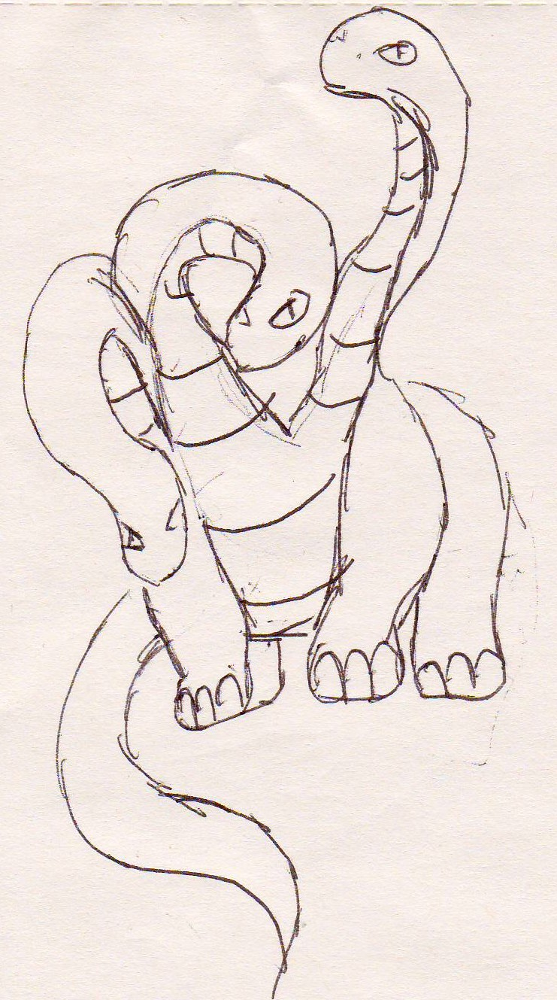

MICHIGAN CONFERENCE ON TOPOLOGY AND PHYSICS
A Midwest Topology Conference
sponsored by
The Michigan Center for Theoretical Physics
co-sponsored by
The Midwest Topology Network
February 6-7, 2010
Ann Arbor

CONFIRMED SPEAKERS :
Mark Behrens
Kevin Costello
Daniel Freed
Sergey Gukov
J. Peter May
Greg Moore
Dennis Sullivan
ALL TALKS WILL BE HELD IN ROOM 1360, EAST HALL.
Schedule of talks
A DINNER RECEPTION WILL BE HELD ON SATURDAY EVENING AT 6:30 IN THE UPPER MATHEMATICS ATRIUM IN EAST HALL.
Please REGISTER HERE to help us plan the logistics of the conference.
GENERAL LOCAL INFORMATION:
http://www.visitannarbor.org
ACCOMMODATIONS: Rooms have been reserved at special rates
at the following hotels:
CAMPUS INN (located on campus)
615 E Huron St.
Ann Arbor, MI 48104-1593
(734)769-2200
www.campusinn.com
HOLIDAY INN NORTH (Located 2 miles away from campus, free shuttle)
3600 Plymouth Road
Ann Arbor, MI 48105
(734)769-9800
www.hiannarbor.com
WALKING DIRECTIONS FROM THE CAMPUS INN TO EAST HALL:
Cross Huron Street at the crosswalk to the left of the front of the hotel. Continue straight ahead on State Street (past a construction site on the left hand side of the street), crossing Washington Street and Liberty Street. After passing North University on the left (in front of the Espresso Royale Caffe), cross state street and bear right onto a diagonal walkway (referred to informally as ``The Diag''). Continue on the diag for about 1/2 mile all the way to a pedestrian passageway through a building known as West Hall. You will face Ulrich's Bookstore and another Espresso Royale Caffe. The entrance to East Hall is to the left of Ulrich's. As an alternative to the approximately 3/4 mile walk, it is also possible to take a cab from the hotel.
DRIVING DIRECTIONS FROM THE I-94 FREEWAY TO EAST HALL:
Take the State Street exit (the middle of the three Ann Arbor exits
from either direction) northbound past several traffic lights
for about two miles to a stop sign (the first one along the way).
Turn right onto South University. Cross East University and Church Street,
and turn right onto Forest. On the right hand side, there is a public
parking structure with reasonable parking rates.
TRANSPORTATION FROM DETROIT METRO AIRPORT:
The Michigan Flyer bus service is available from Ann Arbor to the airport seven days a week. There are seven trips to the airport each day, starting from the Four Points by Sheraton main entrance. Reservations for the $15 trip should be made in advance. http://www.michiganflyer.com/
Blue Cab (734-547-2222) offers service from Ann Arbor to Detroit Metro Airport. Door-to-door sedan service from most parts of Ann Arbor is $55. This charge includes up to 4 people and luggage.
Custom Transit (734-971-5555) offers van service, and depending on the number of people coming in at any given time, it may be less expensive than Blue Cab
http://customtransit.com/airport/rates.php
Limited TRAVEL FUNDING is available from the Midwest Topology Network
for graduate students
and underfunded faculty. Please, register if you plan to request
the funding. Note: all funds have been committed at this
point. Applicants are welcome to join the queue in case
there are funds left over. Due to a high number of requests,
amounts over $250 are unlikely to be funded.
Organizers:
Igor Kriz,Yongbin Ruan,Bob Bruner